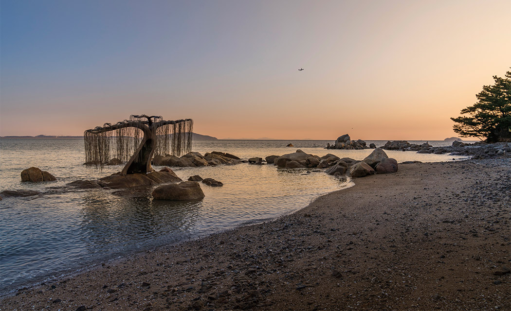
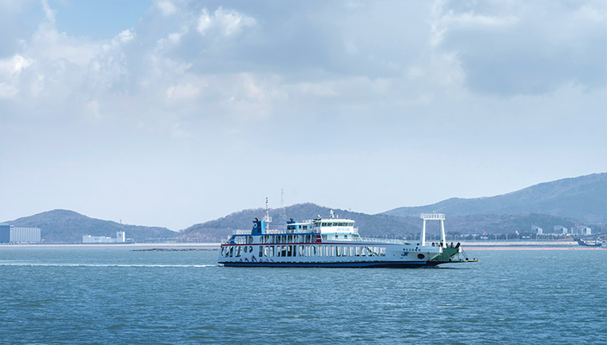
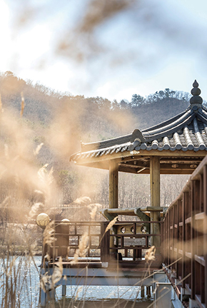
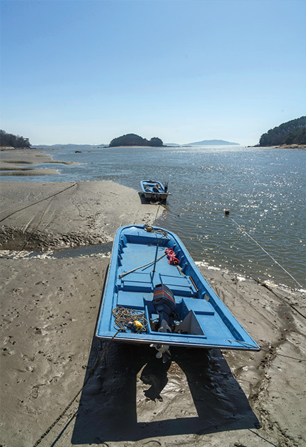
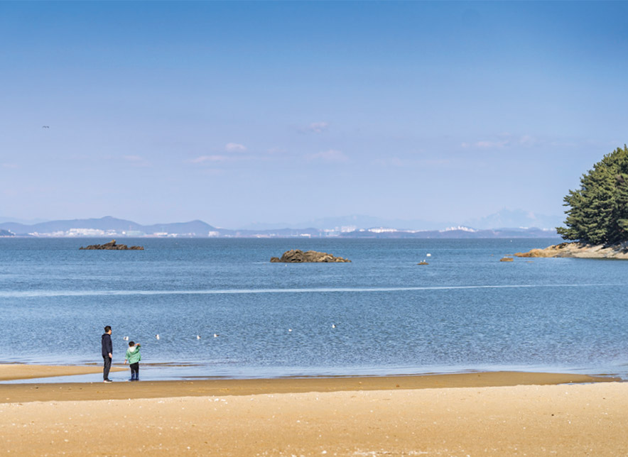
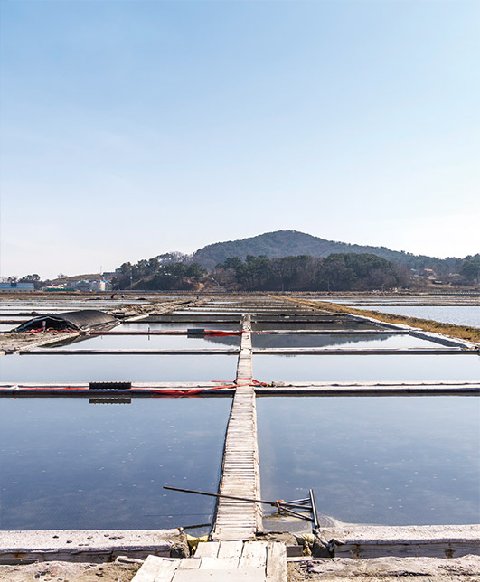
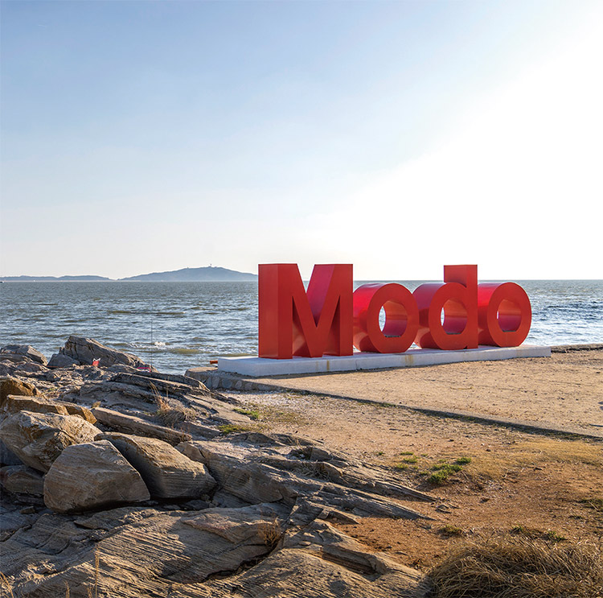
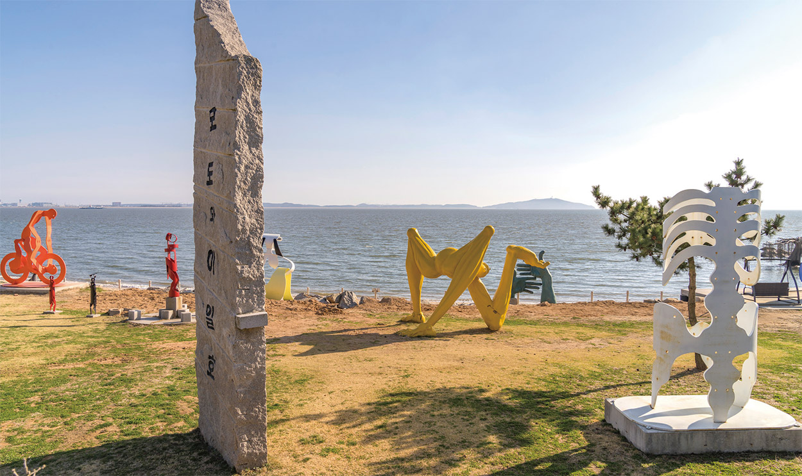

신도, 시도, 모도가 연결된 삼형제 섬을 차로 달리다 풍경에 이끌려 차를 멈춘다. 에메랄드빛 바다 위를 오가는 배와 바람을 가르며 하늘을 나는 갈매기, 그리고 아득하게 이어지는 수평선. 누구라도 붉은빛의 노을 진 이곳의 바다 풍경을 보았다면, 하룻밤 더 머물렀을 것이다. 수식어가 거추장스러울 정도로 찬란하기 그지없는 신시모도의 풍경. 가만히 넋을 잃고 바라본다.
Text. 박영화 Photo. 정우철

햇살도 바람도 공기도 더없이 완벽한 4월의 어느 봄날. 삼목선착장에는 영종도 북도면으로 가려는 차들이 줄을 서서 출항을 기다리고 있다. 뱃고동 소리를 내며 여객선이 서서히 바다로 미끄러져 나갔다. 육지에서 바다를 건너 섬에 이르는 시간은 십분 남짓. 하얀 물보라를 일으키며 여객선이 신도선착장에 도착했다.
신도(信島), 시도(矢島), 모도(茅島)는 각각 다른 섬이지만 연도교로 연결되면서 삼형제섬으로 불린다. 그중 가장 먼저 만나는 섬, 신도. 신도 주민들은 섬에서 생산된 소금 등을 육지에 내다 팔 때 양을 속이지 않고, 착하고 신의가 있다고 해 ‘믿을 신(信)’이 지명에 쓰이면서 ‘신도(信島)’가 되었단다. 그 이야기를 듣고 나니 괜히 주민들을 만날 때마다 반갑게 느껴졌다.
섬 크기가 크지 않으니 섬 전체를 둘러봐도 좋은데, 관광안내 책자에 표시된 일주도로를 따라 드라이브했다. 아담하게 솟은 구봉산을 가운데 두고 바닷가를 따라 이어지는 도로. 섬 드라이브는 어떠한 소음 없이 오로지 자연의 소리만 들릴 뿐이다. 아, 경치 좋은 곳에 펜션이 들어서느라 공사가 한창인 곳이 간혹 있긴 했지만.
신도에서 가장 유명한 관광명소는 구봉산이다. 해발 179m의 북도면에서 가장 높은 곳으로, 경사가 완만해 힘들이지 않고도 오를 수 있다. 4월 중순부터는 벚나무와 진달래꽃이 만발하여 장관을 이룬다. 신도를 소개할 때 빼놓을 수 없는 곳이 하나 더 있는데 바로 신도 수변공원이다. 수문을 통해 들어온 바닷물이 타원형의 수변 산책로를 형성한 것. 탁 트인 서해바다를 바라보며 걷는 기분이 꽤 상쾌하다. 마치 바다 위를 걷는 것처럼. 수변 산책로는 20~30분이면 걷기에 충분하다.
 신도선착장으로 가는 여객선
 산책로를 따라 아름다운 풍광을 눈에 담을 수 있는 신도 수변공원
신도에서 시도를 가기 위해 지나야 하는 연도교. 연도교를 지나려는데 갓 구운 빵처럼 부풀어 오른 갯벌에 시선이 멈춘다. 바닷물이 빠져나간 자리에 펼쳐진 새로운 세상. 갯벌이 숨을 내쉴 때마다 바지락 등 해양생물들이 함께 호흡하며 모습을 드러낸다.
신도가 한적한 섬마을의 풍경이었다면, 시도는 북도면의 행정 중심지다. 면사무소와 우체국, 파출소, 종합운동장 같은 주요 시설이 이곳에 몰려 있다. 연도교를 건너자마자 오른쪽 길로 들어서면 염전이 나온다. 새하얀 소금 대신 바닷물이 채워져 있었는데, 자세히 들여다보니 소금의 결정이 곳곳에 생기고 있었다. 요즘은 흔히 볼 수 없는 광경이다. 그렇게 10분 정도 염전의 풍경을 카메라에 담은 뒤에 다시 길을 나섰다.
시도 하면 떠오르는 것이 바로 수기해변이다. 이곳은 고운 백사장과 소나무숲, 해변을 따라 설치된 그늘막 덕분에 피서지로 유명한데, 평일 낮의 한적함 때문인지 어느 외국의 해변처럼 이국적인 풍광이 느껴졌다. 사실 수기해변은 드라마 촬영지로 유명해졌는데, 드라마 <풀하우스>와 <슬픈 연가>의 촬영지였다. 드라마 방영 이후 한동안 관광객이 몰려 몸살을 앓았지만, 세월이 흘러 지금은 바닷가의 팻말만이 이곳이 드라마 세트장이었음을 알려줄 뿐이다.
 바닷물이 빠져나간 자리에서 조용히 숨쉬는 갯벌
 이국적인 풍광으로 유명한 수기해변
 연도교 너머에 펼쳐진 염전의 모습
마지막 섬은 모도다. 삼형제 섬 중 가장 작은 섬. 모도에 가면 꼭 들르는 곳이 박주기다. 지형이 박쥐처럼 생겨서 붙은 지명인데, 박주기의 ‘Modo’라는 글자로 만든 빨간색 조형물은 인증샷을 남기기 위한 필수 장소다. 역시나 조형물 앞에 세 팀이나 줄을 서고 있었다. 선착장에서 모도까지 오는 내내 사람 구경을 거의 하지 못한 걸 생각하며 이곳의 인기를 실감했다.
박주기에서 모도리 해안 둘레길을 따라 걸으면 얼마 안가 배미꾸미 조각공원이 나온다. 배미꾸미는 땅이 배 밑구멍처럼 생겼다는 의미로, 공원 이름도 이 의미로 지어진 것이다. 지난 2003년 모도로 여행을 왔던 조각가 이일호 작가가 황량한 해변 풍경에 반해 이곳에 작업실을 냈고, 완성한 작품을 하나씩 마당에 전시하면서 완성된 장소다. ‘초현실주의’를 지향하는 이일호 조각가의 작품이 바다와 어우러져 몽환적인 분위기를 자아내고 있다. 가장 인상 깊었던 작품은 ‘버들선생’. 작품에는 제목이나 설명이 따로 없었는데, 공원 내 카페 주인에게 물어 알게 된 것이다. 특히 만조 때 작품 아랫부분이 물에 잠겨, 마치 바다에 떠 있는 것처럼 낮과 다른 장면을 보여준다.
해가 지고 붉은 노을이 하늘과 바다를 물들이기 시작했다. 그 위를 쉼 없이 날아오르는 비행기에 잠시 시선을 빼앗긴다. 어느새 버들선생도 바닷속에 잠겨 또 다른 분위기를 만들어내고 있었다. 이곳에서의 풍경이 낯설고 설렌다. 그것이 지금 이 섬에 온 이유다.
 모도를 상징하는 조형물 ‘Modo’
 초현실주의 작품을 만날 수 있는 배미꾸미 조각공원
가는 길
삼목선착장에서 신도로 가는 배가 오전 6시 50분부터 있고, 신도에서 삼목항으로 돌아오는 마지막 배는 오후 7시 30분이다.(신분증 필수 지참)
식당
세 섬을 모두 합쳐 30여 곳의 식당이 있다. 소라비빔밥, 낙지볶음, 바지락칼국수, 회, 매운탕 등이 인기 메뉴다.
 줌인 KOMSA
독도새우와 오징어 만나러 GO
줌인 KOMSA
독도새우와 오징어 만나러 GO